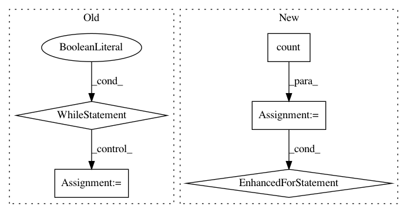

9861ef35787271ace00c20343894f9ffc45b31fc,onmt/IO.py,ONMTDataset,collect_feature_dicts,#Any#,273
Before Change
def collect_feature_dicts(fields):
feature_dicts = []
j = 0
while True:
key = "src_feat_" + str(j)
if key not in fields:
break
feature_dicts.append(fields[key].vocab)
j += 1
return feature_dicts
@staticmethod
def get_fields(nFeatures=0):
After Change
@staticmethod
def collect_feature_dicts(fields):
feature_dicts = []
for j in count():
key = "src_feat_" + str(j)
if key not in fields:
break
feature_dicts.append(fields[key].vocab)
return feature_dicts
@staticmethod
def get_fields(nFeatures=0):
In pattern: SUPERPATTERN
Frequency: 3
Non-data size: 5
Instances
Project Name: OpenNMT/OpenNMT-py
Commit Name: 9861ef35787271ace00c20343894f9ffc45b31fc
Time: 2017-09-01
Author: bpeters@coli.uni-saarland.de
File Name: onmt/IO.py
Class Name: ONMTDataset
Method Name: collect_feature_dicts
Project Name: MVIG-SJTU/AlphaPose
Commit Name: 9cea0bd6cb7c930ce86a0d3e7aee78742a12a869
Time: 2019-12-24
Author: hjpotter92+github@gmail.com
File Name: alphapose/utils/webcam_detector.py
Class Name: WebCamDetectionLoader
Method Name: frame_preprocess
Project Name: OpenNMT/OpenNMT-py
Commit Name: 9861ef35787271ace00c20343894f9ffc45b31fc
Time: 2017-09-01
Author: bpeters@coli.uni-saarland.de
File Name: onmt/IO.py
Class Name: ONMTDataset
Method Name: collect_features